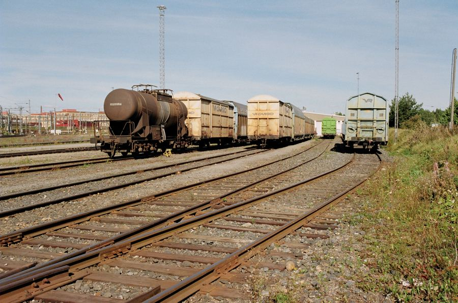
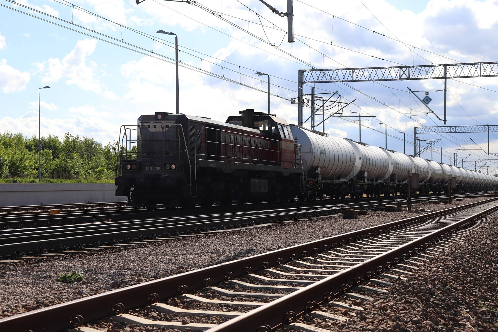
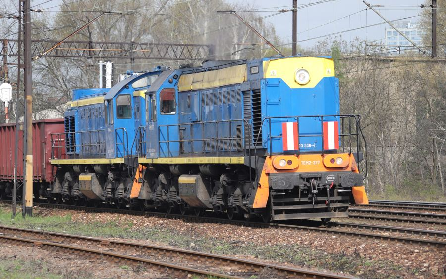
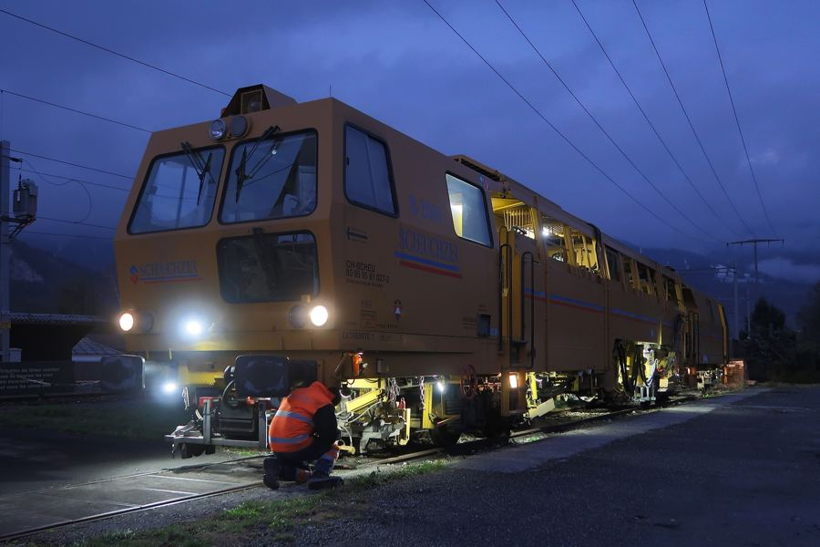

Przewóz towarów koleją
Organizacja i realizacja przewozu ładunku od stacji nadania do odbiorcy. Ustalamy relację, termin i sposób podstawienia wagonów.

Dąbrowa Górnicza, Aleja Józefa Piłsudskiego 50
LUK-TRAIN to spółka z Dąbrowy Górniczej. Przewozimy towary koleją, obsługujemy bocznice i wykonujemy roboty przy drogach szynowych. Napisz, co i skąd trzeba przewieźć, a odpowiemy z propozycją.
NIP 649-233-10-64 · KRS 0001076007
Zakres działalności zgodny z wpisem spółki w Krajowym Rejestrze Sądowym.

Organizacja i realizacja przewozu ładunku od stacji nadania do odbiorcy. Ustalamy relację, termin i sposób podstawienia wagonów.

Usługi wspomagające transport kolejowy: podstawianie i zabieranie wagonów, prace manewrowe, przygotowanie przesyłek do drogi.

Roboty związane z budową i utrzymaniem dróg szynowych, w tym torów bocznicowych, oraz inne prace z zakresu inżynierii lądowej.
Wystarczy jedna wiadomość. Im więcej konkretów w zapytaniu, tym szybciej przygotujemy propozycję i termin. Nie trzeba znać numerów stacji ani typów wagonów, to ustalimy razem.
W zapytaniu warto podać:
LUK-TRAIN sp. z o.o. ma siedzibę w Dąbrowie Górniczej, w Zagłębiu, gdzie gęsta sieć linii towarowych łączy zakłady przemysłowe ze Śląskiem i resztą kraju. Spółka jest wpisana do Krajowego Rejestru Sądowego od grudnia 2023 roku, a jej podstawową działalnością jest transport kolejowy towarów.
Rozmawiamy konkretnie: o relacji, terminie i warunkach. Sprawy rozliczeń i faktur prowadzi nasz dział księgowy pod osobnym adresem e-mail.
Opisz ładunek i relację, odpowiemy e-mailem. Formularz otwiera gotową wiadomość w programie pocztowym.